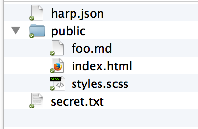

Using HarpJS to Simplify Life
Because simple is good (like kittens)
Who am I?
- Developer for Adobe
- Web Standards, HTML5, JavaScript, Mobile, ColdFusion
- Blogging at www.raymondcamden.com
- Tweeting at cfjedimaster

What is Harp?
An open source application (command line tool) as well as a commercial platform for hosting.
harpjs.com
Harp acts as a static web server with loads of built in preprocessing.
What is a web server?
Just serves up files! (Ok, it does a little bit more...)
Why would I use another web server?
Harp adds preprocessing (and magic, along with kittens) on top!
What is preprocessing?
Things that let you write CSS, JavaScript, and HTML without writing CSS, JavaScript, and HTML.
What Harp Supports:
CSS: Less, Sass, or Stylus (or plain CSS)
JavaScript: CoffeeScript (or plain JavaScript)
HTML: Markdown, Jade, EJS (or plain HTML)
You can use any mix of these!
What Harp Supports:
CSS: Less, Sass, or Stylus (or plain CSS)
JavaScript: CoffeeScript (or plain JavaScript)
HTML: Markdown, Jade, EJS (or plain HTML)
Installing Harp
Mac
sudo npm install -g harp
Windows
npm install -g harp
Creating a Harp app - Option One
Just pick a folder with an index.html file!
Creating a Harp app - Option Two
harp init projectname
Starting a Harp app
harp server
Demo
Preprocessing in Harp
All based on extension, all automatic, and you can (should) link to the 'output' version.
Compiling
All this means is outputting to HTML.
harp compile src output
Demo
Harp Conventions
By default, everything in the folder is available, like a regular web server.
You can also create a "public" folder, include a harp.json file, and only public files will be served.
Anything with a _ in front of the file name is protected as well.
Demo
Going Dynamic
Both Jade and EJS allow for embedded scripts - run on the server, by Harp, not on the client.
My preference: EJS (www.embeddedjs.com)
Examples
Uses <% ... %> for code
Uses <%= ... %> to output dynamic text
Uses <%- ... %> to output dynamic html
Demo
Layouts
Named as _layout.ext where ext is ejs or jade (or ejs)
Demo
Partials
Fancy way of saying includes.
EJS Example
<%- partial("_legalbs") %>
Demo
Working with Data
Globals
Lives in harp.json and is available everywhere. That's it.
{
"globals":{
}
}
Demo
Metadata
Stored in _data.json, one per subdirectory, and available to your code as public.{foldername}._data.
Why?
Demo
Current
Object containing information about your current request (typically used for navigation UI).
Example
Request for /articles/beer
{
path: ["articles","beer"],
source: "beer"
}
Demo
But wait - there's more!
- Multihost
- Inside another Node app
- Basic Auth
Debugging Tips
- Use compile as a way to find errors
- JSON.stringify(foo)
- console.log(...)
Real World Example
Harp Platform
harp.io